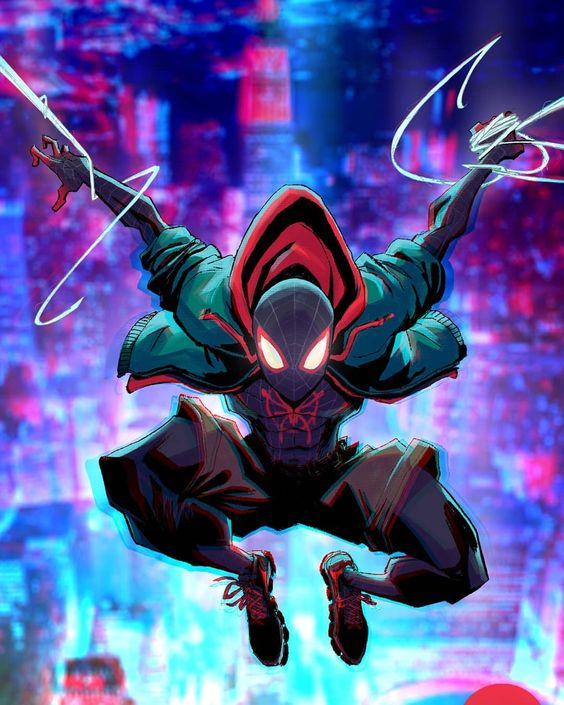
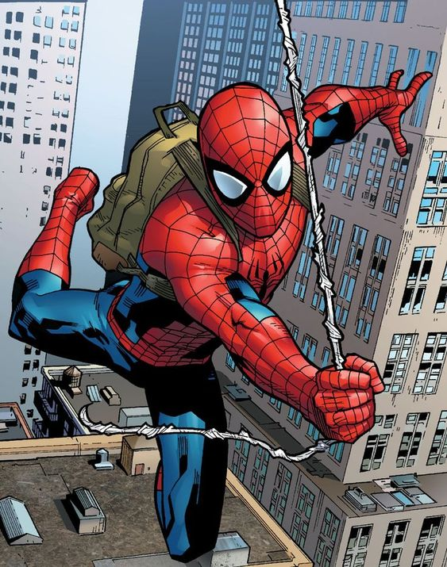
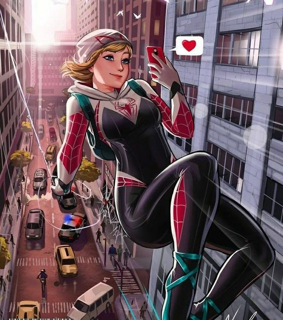

Miles Morales

Miles é picado por uma aranha geneticamente modificada quando visitava (escondido do pai) a casa do seu tio, Aaron Davis, um criminoso que havia entrado na Oscorp para roubar segredos da organização e, sem saber, trouxe o espécime consigo na bolsa.
Peter Parker

Peter Parker nasceu em 14 de outubro de 1990 no Queens, em Nova York. É um estudante do ensino médio órfão que vive com seu tio Ben e sua tia May. Parker foi mordido por uma aranha radioativa em uma exposição científica e adquire a agilidade de um aracnídeo.
Gwen Stacy

A Gwen Stacy que ganhou os mesmos poderes do Homem-Aranha é originária da Terra-65, uma das inúmeras realidades alternativas do Multiverso da Marvel.